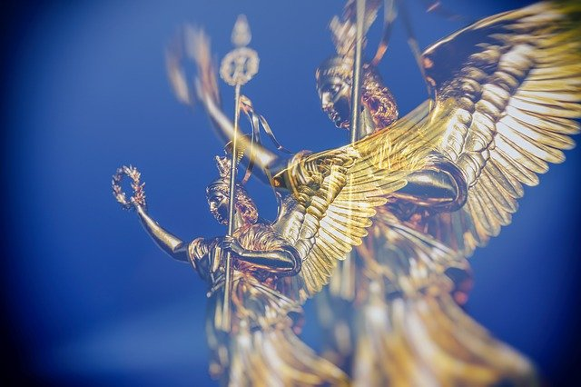
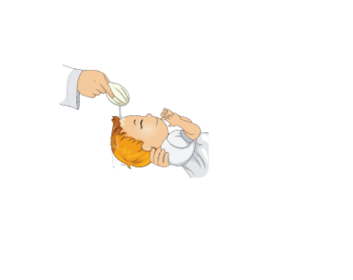
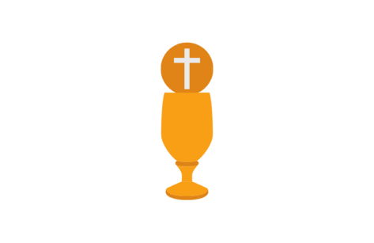
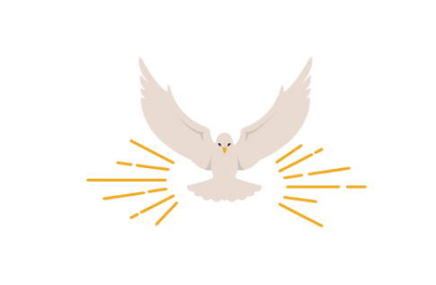

Atividades da Igreja
Nossa igreja oferece serviços e cursos tanto de forma presencial como online, você pode entrar em contato pelo whatsapp para saber mais.
Curso de Batismo
O batismo é um sinal visível de uma graça invisível. É uma ação de fé e aceitação. É a confirmação de uma aliança com Cristo. No batismo podemos ter duas certidões: a de óbito para o pecado e a de nascimento para a vida eterna. Jesus morreu e ressuscitou e simbolicamente no batismo nós também morremos e ressuscitamos com Cristo. Jesus é o nosso maior exemplo e depois de adulto, antes de iniciar seu ministério, Ele foi batizado nas águas. Se Jesus que era Jesus se batizou, imagine nós? A Bíblia nos ordena pregar o evangelho e batizar os convertidos. Porque no ato do batismo, ao imergirmos alguém nas águas, simbolicamente aquela pessoa está sendo sepultada com Jesus, e ao levantarmos ela das águas, estamos profetizando a ressurreição dela com Cristo para viver uma nova vida a partir daquele momento. Portanto, no batismo é onde expressamos o tipo de fé que temos; a fé que se identifica com Cristo e a sua obra na cruz.
Catequese da Eucaristia
Para receber a eucaristia, é necessário fazer a catequese, que são encontros onde as pessoas aprendem sobre Deus, a Bíblia, uma reflexão sobre o catolicismo. Só após a catequese o indivíduo está preparado para fazer a primeira comunhão, que geralmente é feita com 7 anos de idade, o que não impede que outras pessoas se convertam ao catolicismo e façam depois. Um dos sete sacramentos, a eucaristia ou comunhão é o ato de recebimento da hóstia consagrada, o símbolo do corpo de Cristo. O significado da eucaristia é receber a hóstia como o corpo de Cristo que ele ofereceu na cruz, e o vinho é seu sangue derramado para remissão da humanidade. No catolicismo, a transubstanciação ocorre durante a eucaristia, ou seja, existe uma mudança de substância, e o pão se transforma no corpo de Cristo e o vinho no sangue de Cristo.
Curso de Crisma
Segundo a doutrina da Igreja Católica, a Crisma – ou a Confirmação – é um sacramento em que o fiel recebe, através da ação do bispo, uma unção com o Crisma (óleo). Trata-se de um rito em que o ministro impõe as mãos sobre os crismandos, invocando o Espírito Santo, e os unge com óleo. O sacramento do Crisma consiste na Confirmação do Batismo pelo Espírito Santo, por meio da qual o fiel é enviado ao mundo para testemunhar o Evangelho de Jesus Cristo em atos e palavras. Na Igreja Católica, administra-se esse sacramento quando se atinge a idade da razão, e normalmente se reserva sua celebração ao Bispo, significando, assim, que esse sacramento corrobora o vínculo eclesial. Assumindo o compromisso com Jesus Cristo e avivados pelo Espírito Santo, esses jovens começam a ser e fazer a diferença na sociedade, que cada vez mais precisa de bons e santos exemplos.